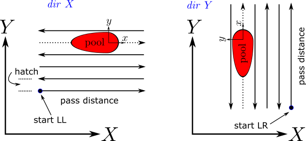

Syntax:
am pass id dir d speed V hatch h overhatch oh
Examples:
am pass 1 dir X speed 9 hatch 75 am pass 2 dir Y speed 10 hatch 50 overhatch 25
Description:
This command is used by am/ellipsoid, and potts/am_weld to specify raster scan patterns for rectangular domains. Multiple passes can be defined in a single input file, each using unique id values. The am pass command is a required subelement of am cartesian_layer that specifies a cartesian build layer in the x,y plane. The initial heading, left or right for dir=X or up or down for dir=Y depends upon the starting location specified in the am cartesian_layer command. By default, scan lines are serpentine but this can be turned off in the am cartesian_layer command.
The pass distance and number of hatch lines are controlled by the X,Y extent of the domain specified using the region command, which must be a box; multiple passes, seperated by hatch spacing are invoked until the domain dimension perpindicular to the scan dir is exhausted. The optional overhatch value can be used to cause additional scan lines. The melt pool has its own local coordinate system x,y so that the pool axis x is always oriented along dir d.
The example commands above define two passes, each with a different dir, speed, hatch and optional overhatch.
Restrictions:
This rastering command can be used with app_style potts/am/weld or app_style am/ellipsoid.
Related commands:
Default:
The default for overhatch = 0.0.